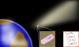

panspermia

Definition: Panspermia (from Ancient Greek πᾶν (pan) 'all ', and σπέρμα (sperma) 'seed') is the hypothesis, first proposed in the 5th century BCE by the Greek philosopher Anaxagoras, that life exists throughout the Universe. It is thought to be distributed by space dust, meteoroids, asteroids, comets, and planetoids, as well as by spacecraft carrying unintended contamination by microorganisms. Panspermia is a fringe theory with little support amongst mainstream scientists. Critics argue that it does not answer the question of the origin of life but merely places it on another celestial body. It is also criticized because it cannot be tested experimentally.Panspermia proposes (for example) that microscopic lifeforms which can survive the effects of space (such as extremophiles) can become trapped in debris ejected into space after collisions between planets and small Solar System bodies that harbor life. Panspermia studies concentrate not on how life began, but on methods that may distribute it in the Universe.Pseudo-panspermia (sometimes called soft panspermia or molecular panspermia) is the well-attested hypothesis that many of the pre-biotic organic building-blocks of life originated in space, became incorporated in the solar nebula from which planets condensed, and were further—and continuously—distributed to planetary surfaces where life then emerged.
Source: Wikipedia
Wikipedia Page (Something wrong with this association? Let us know.)
Wikidata Page (Something wrong with this association? Let us know.)